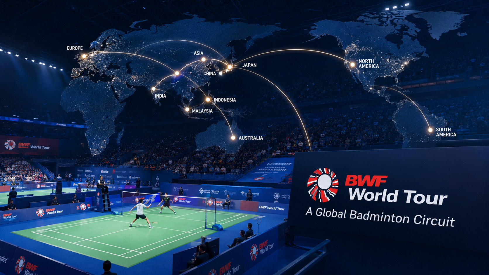
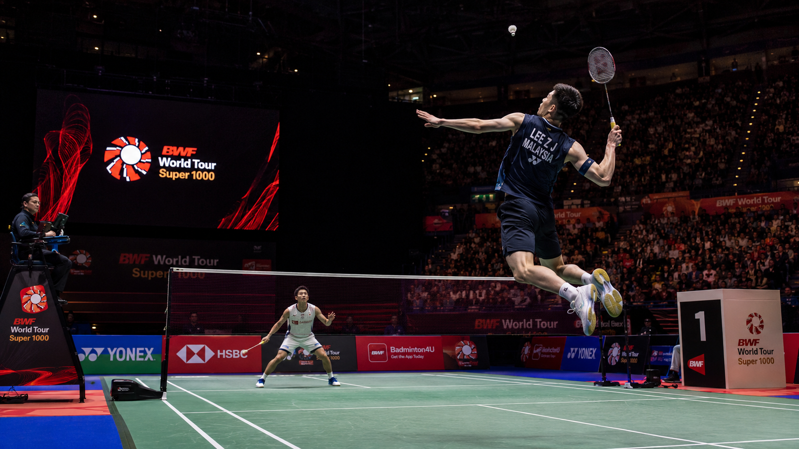
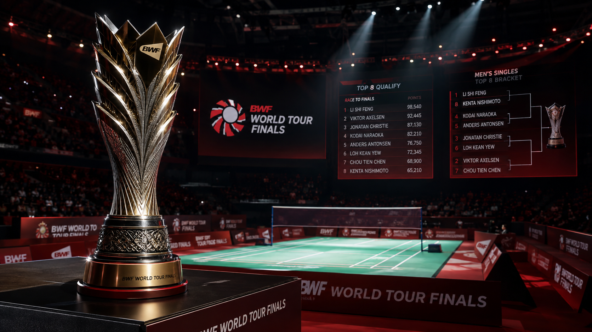

BWF World Tour
General Information
- Official name: BWF World Tour
- Organizer: Badminton World Federation (BWF)
- Created: 2018
- Replaced: BWF Super Series (2007–2017)
- Main sponsor: HSBC
- Objective: To bring together the most important individual tournaments on the annual calendar.
History
In March 2017, the BWF announced a major reform of the international calendar.
The objectives were to:
- Increase the level of the tournaments.
- Increase prize money.
- Make the circuit more attractive to players, sponsors, and television audiences.
- Create a structure similar to professional tennis.
The new system officially began in 2018, replacing the former Super Series.
What Exactly Is the BWF World Tour?
It is not a single tournament.
It is an annual circuit made up of numerous tournaments held around the world.
Each tournament awards:
- Points for the BWF World Ranking.
- Prize money.
- Points toward qualification for the World Tour Finals.
Events
Five events are contested at the tournaments:
- Men’s Singles (MS).
- Women’s Singles (WS).
- Men’s Doubles (MD).
- Women’s Doubles (WD).
- Mixed Doubles (XD).

Tour Levels
The circuit is currently divided into five main levels, plus a development category known as Super 100.
World Tour Finals — Level 1
This is the tournament that closes the season.
Only the top eight players or pairs in the World Tour rankings for each event qualify.
Characteristics:
- The highest level of prestige within the circuit.
- The largest prize money.
- A group stage followed by knockout rounds.
Super 1000
These are the most important tournaments of the year after the World Tour Finals.
Examples:
- All England Open.
- Indonesia Open.
- China Open.
- Malaysia Open.
Characteristics:
- The best players in the world.
- Very high prize money.
- A large number of ranking points.
Super 750
The level immediately below Super 1000.
Examples:
- Japan Open.
- Denmark Open.
- French Open.
- India Open.
Super 500
An intermediate level.
Examples:
- Indonesia Masters.
- Malaysia Masters.
- Singapore Open.
- Hong Kong Open.
Super 300
Important tournaments for rising players.
Many players begin competing at this level before progressing to the higher tiers.
Super 100
Although it is not officially part of the World Tour, it awards ranking points and serves as an entry point into the professional circuit.
Calendar
The season normally begins in January and ends in December.
A typical season features around 30 tournaments, culminating in the World Tour Finals. The exact number may vary slightly depending on the annual calendar approved by the BWF.
Qualification System
Players gain entry based on:
- BWF World Ranking.
- Tournament quotas.
- Special invitations or wild cards, when available.
- Qualifying rounds at certain levels.
Super 1000 tournaments generally have more restricted entry than Super 300 or Super 100 events.
Ranking Points
The higher the level of the tournament:
- The more ranking points it awards.
- The greater the prize money.
- The greater the prestige.
Approximate points awarded to the champion:
- World Tour Finals: 12,000 points.
- Super 1000: 11,000 points.
- Super 750: 9,200 points.
- Super 500: 9,000 points.
- Super 300: 7,000 points.
- Super 100: 5,500 points.

Match Format
All tournaments use the official BWF rules:
- Best of three games.
- Traditionally played to 21 points per game, although the BWF approved a change to a 15-point scoring system whose implementation depends on the competition calendar.
World Tour Finals
It is the badminton equivalent of tennis’s ATP Finals.
Only the top eight players or pairs in each event qualify according to the specific World Tour rankings.
Being World No. 1 does not automatically guarantee qualification; a player must accumulate enough points on the circuit during that season.
Host Countries
The circuit regularly visits countries such as:
- China.
- Indonesia.
- Japan.
- Malaysia.
- India.
- Singapore.
- Denmark.
- France.
- Thailand.
- South Korea.
- United States.
- Canada.
The calendar changes slightly over each multi-year cycle.
Difference from the World Championships
BWF World Tour
- Annual circuit.
- Numerous tournaments.
- Accumulation of points.
- Regular prize money.
- Concludes with the World Tour Finals.
BWF World Championships
- A single tournament each year.
- Determines the World Champion.
- Greater historical prestige.
- Does not form part of the World Tour.

Players and Countries That Commonly Dominate the Circuit
The major historical powers of the World Tour include:
- China.
- Indonesia.
- Japan.
- South Korea.
- Denmark.
- Malaysia.
- India.
- Thailand.
Curiosities
The World Tour Replaced the Super Series
Before 2018, the main circuit was the BWF Super Series, which operated from 2007 to 2017.
Not All Tournaments Have the Same Prestige
Winning a Super 1000 carries much greater sporting value than winning a Super 300, both because of the level of competition and the ranking points and prize money available.
The Best Players Have Participation Obligations
The circuit’s leading players are generally required by regulation to compete in all Super 1000 events, all Super 750 events, and a minimum number of Super 500 tournaments in order to maintain the strength and appeal of the calendar.
The World Tour Finals Uses a Group Stage
Unlike the rest of the circuit, it does not begin with direct elimination. Players are divided into groups, with the best advancing to the semifinals.
Not Every Tournament Belongs to the World Tour
In addition to the World Tour, there are other official competitions such as:
- BWF World Championships.
- Olympic Games.
- Thomas Cup.
- Uber Cup.
- Sudirman Cup.
- Continental Championships.
- International Challenge.
- International Series.
- Future Series.
These competitions form part of the international badminton calendar but not the main World Tour circuit.
Interesting Facts
- The All England Open is the oldest and most prestigious tournament on the World Tour, with a history dating back to 1899, long before the creation of the modern circuit.
- Although the World Tour began in 2018, it brings together the best players in the world throughout the year, which is why many consider winning several Super 1000 titles in a single season to be a demonstration of dominance comparable to conquering a major professional circuit.
- The circuit visits several continents every year, making it the international badminton competition with the broadest geographical reach.